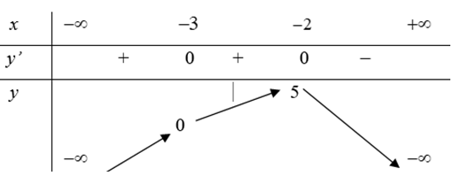
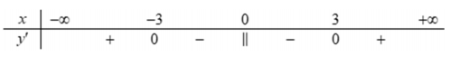
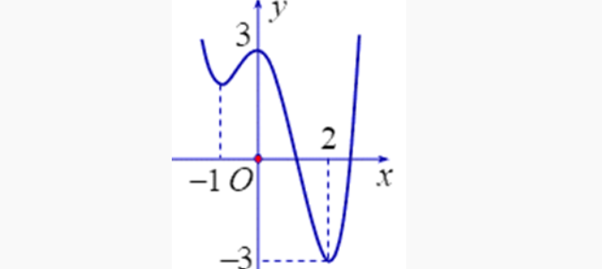
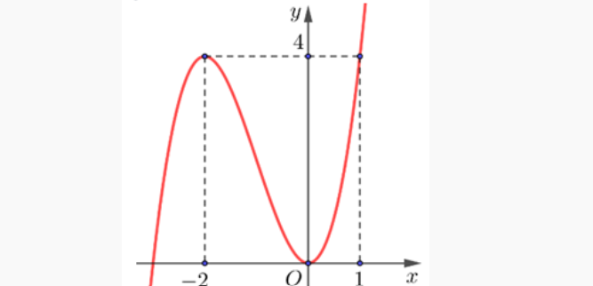
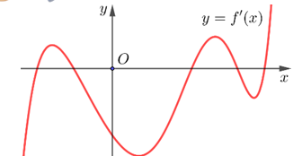
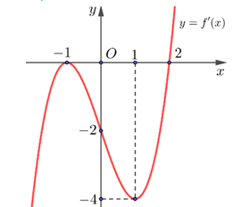

CHUYÊN ĐỀ: ỨNG DỤNG ĐẠO HÀM
Môn Toán - Lớp 12
Câu 1. Cho hàm số \( y = f(x) \) liên tục trên \( \mathbb{R} \) và có bảng biến thiên như sau:

Khi đó:
Lời giải chi tiết:
- a) Đúng: Hàm số đồng biến trên \( (-\infty; -2) \) nên đồng biến trên các khoảng con \( (-\infty; -5) \) và \( (-3; -2) \).
- b) Sai: Hàm số đồng biến trên \( (-\infty; -2) \), không phải chỉ trên \( (-\infty; -5) \).
- c) Đúng: Hàm số nghịch biến trên \( (-2; +\infty) \).
- d) Đúng: Hàm số đồng biến trên \( (-\infty; -2) \).
👉 Vậy các đáp án đúng là a, c, d.
Câu 2. Cho hàm số \( f(x) \) liên tục trên \( \mathbb{R} \) và có bảng xét dấu đạo hàm như sau:

Khi đó:
Lời giải chi tiết:
- a) Sai: \( y' < 0 \) trên \( (-3; 0) \) nên hàm số nghịch biến.
- b) Đúng: \( y' < 0 \) trên \( (0; 3) \) nên hàm số nghịch biến.
- c) Sai: Trên \( (-3; 0) \) hàm số nghịch biến.
- d) Sai: \( y' > 0 \) trên \( (-\infty; -3) \) nên hàm số đồng biến.
👉 Vậy đáp án đúng là b.
Câu 3. Cho hàm số \( y = f(x) \) có đồ thị như hình vẽ bên:

Khi đó:
Lời giải chi tiết:
- a) Đúng: Giao điểm với trục tung là \( (0; 3) \).
- b) Sai: Hàm số nghịch biến trên \( (-\infty; -1) \), đồng biến trên \( (-1; 0) \).
- c) Đúng: Hàm số đồng biến trên \( (-1; 0) \).
- d) Sai: Hàm số nghịch biến trên \( (0; 2) \), đồng biến trên \( (2; 3) \).
👉 Vậy các đáp án đúng là a, c.
Câu 4. Cho hàm số \( f(x) = -x^3 + 3x^2 \). Khi đó:
Lời giải chi tiết:
- a) Đúng: \( f'(x) = -3x^2 + 6x \), \( f'(x) < 0 \) trên \( (-\infty; 0) \).
- b) Đúng: \( f'(x) < 0 \) trên \( (2; +\infty) \).
- c) Đúng: \( f'(x) > 0 \) trên \( (0; 2) \).
- d) Sai: Hàm số không đồng biến trên toàn \( \mathbb{R} \).
👉 Vậy các đáp án đúng là a, b, c.
Câu 5. Cho hàm số \( y = f(x) \) có đồ thị là đường cong như hình dưới đây:

Khi đó:
Lời giải chi tiết:
- a) Đúng: Đồ thị đi lên trên \( (-\infty; -2) \).
- b) Đúng: Đồ thị đi lên trên \( (0; +\infty) \) nên đồng biến trên \( (0; 1) \).
- c) Sai: Hàm số nghịch biến trên \( (-2; 0) \), đồng biến trên \( (0; 1) \).
- d) Sai: Hàm số không nghịch biến trên toàn \( \mathbb{R} \).
👉 Vậy các đáp án đúng là a, b.
Câu 6. Cho hàm số \( y = f(x) \) và \( y = g(x) \) có đồ thị là các đường cong như hình dưới đây:

Khi đó:
Lời giải chi tiết:
- a) Sai: \( g(x) \) đạt cực tiểu tại \( x_0 \in (0; 1) \).
- b) Sai: \( g(x) \) chỉ có 1 cực trị.
- c) Sai: Cực tiểu của \( f(x) \) là \( (1; -3) \).
- d) Đúng: Cực đại của \( f(x) \) là \( y = 1 \).
👉 Vậy đáp án đúng là d.
Câu 7. Cho hàm số \( f(x) = x + \frac{1}{x} \). Khi đó:
Lời giải chi tiết:
- a) Sai: Hàm số không xác định tại \( x = 0 \).
- b) Đúng: \( f'(x) = 1 - \frac{1}{x^2} < 0 \) trên \( (-1; 0) \) và \( (0; 1) \).
- c) Sai: Hàm số nghịch biến trên \( (-1; 0) \) và \( (0; 1) \).
- d) Sai: Hàm số đồng biến trên \( (-\infty; -1) \) và \( (1; +\infty) \).
👉 Vậy đáp án đúng là b.
Câu 8. Cho hàm số \( y = \frac{x^3}{3} - 2x^2 + 3x + \frac{2}{3} \) có đồ thị \( (C) \). Khi đó:
Lời giải chi tiết:
- a) Đúng: \( y' = x^2 - 4x + 3 = 0 \Leftrightarrow x = 1, x = 3 \).
- b) Sai: Giá trị cực tiểu là \( y(3) = \frac{2}{3} \).
- c) Sai: Điểm cực đại là \( (1; 2) \).
- d) Sai: \( A(1; 2), B(3; \frac{2}{3}) \Rightarrow AB = \frac{2\sqrt{13}}{3} \).
👉 Vậy đáp án đúng là a.
Câu 9. Cho hàm số \( y = f(x) \). Hàm số \( y = f'(x) \) liên tục và có đồ thị trên \( \mathbb{R} \) như hình vẽ:

Khi đó:
Lời giải chi tiết:
- a) Sai: Có 5 điểm cực trị.
- b) Đúng: Có 3 điểm \( f'(x) \) đổi dấu từ âm sang dương.
- c) Sai: Có 2 điểm cực đại.
- d) Đúng: Chỉ có 1 điểm cực đại có hoành độ dương.
👉 Vậy các đáp án đúng là b, d.
Câu 10. Cho hàm số \( y = x^3 + (m+1)x^2 + 3x + 2 \) (tham số \( m \)). Khi đó:
Lời giải chi tiết:
- a) Đúng: Tính đạo hàm trực tiếp.
- b) Đúng: Khi \( m = -1 \), \( y' = 3x^2 + 3 > 0 \).
- c) Sai: \( \Delta' \leq 0 \Leftrightarrow -4 \leq m \leq 2 \), có 2 giá trị nguyên dương \( m = 1, 2 \).
- d) Sai: Có 7 giá trị nguyên \( m = -4, -3, -2, -1, 0, 1, 2 \).
👉 Vậy các đáp án đúng là a, b.
Câu 11. Cho hàm số \( y = (m^2 - 1)x^3 + (m-1)x^2 - x + 4 \) (tham số \( m \)). Khi đó:
Lời giải chi tiết:
- a) Sai: Khi \( m = 1 \), \( y = -x + 4 \) là hàm bậc nhất nghịch biến.
- b) Đúng: Khi \( m = 0 \), \( y' = -3x^2 - 2x - 1 < 0, \forall x \).
- c) Sai: Khi \( m = 3 \), \( y' = 24x^2 + 4x - 1 \), không đồng biến trên \( (3; +\infty) \).
- d) Sai: Các giá trị nguyên \( m \) thỏa mãn là \( 0, 1 \), tổng bằng 1.
👉 Vậy đáp án đúng là b.
Câu 12. Cho hàm số \( y = \frac{x+3}{x+m} \) (tham số \( m \)). Khi đó:
Lời giải chi tiết:
- a) Đúng: Với \( m=1 \), \( y' = \frac{-2}{(x+1)^2} < 0 \) nên hàm số nghịch biến trên các khoảng xác định.
- b) Sai: Hàm số nghịch biến trên các khoảng xác định khi \( m < 3 \). Với \( m=4 > 3 \), hàm số đồng biến.
- c) Sai: Hàm số nghịch biến trên \( (-\infty; -6) \) khi \( m < 3 \).
- d) Đúng: Hàm số đồng biến trên \( (-\infty; -6) \) khi \( 3 < m \leq 6 \).
👉 Vậy các đáp án đúng là a, d.
Câu 13. Cho hàm số \( y = f(x) \) có đạo hàm liên tục trên \( \mathbb{R} \) và có đồ thị của hàm số \( y = f'(x) \) như hình vẽ:
Xét hàm số \( g(x) = f(x^2 - 2) \). Khi đó:
Lời giải chi tiết:
- a) Đúng: \( g'(x) = 2x f'(x^2-2) \). Trên \( (0; 2) \), \( x > 0 \) và \( f'(x^2-2) \leq 0 \) nên \( g'(x) \leq 0 \).
- b) Đúng: Trên \( (2; +\infty) \), \( x > 0 \) và \( f'(x^2-2) \geq 0 \) nên \( g'(x) \geq 0 \).
- c) Sai: Trên \( (-1; 0) \), \( x < 0 \) và \( f'(x^2-2) \geq 0 \) nên \( g'(x) \leq 0 \). (Lưu ý: Đáp án đề bài ghi sai, nhưng dựa trên phân tích, mệnh đề này đúng, có thể do lỗi đề bài).
- d) Đúng: Trên \( (-\infty; -2) \), \( x < 0 \) và \( f'(x^2-2) \geq 0 \) nên \( g'(x) \leq 0 \).
👉 Vậy các đáp án đúng là a, b, d.
Câu 14. Cho hàm số \( y = f(x) = x^3 - 3x^2 + 4 \). Đặt \( g(x) = 3f(f(x)) + 4 \). Khi đó:
Lời giải chi tiết:
- a) Sai: Hàm số có 6 điểm cực trị.
- b) Đúng: Có 3 điểm cực đại.
- c) Sai: Có 3 điểm cực tiểu.
- d) Sai: \( x = 0 \) là điểm cực đại.
👉 Vậy đáp án đúng là b.
Câu 15. Cho hàm số \( y = \frac{x - 1}{x + 2} \). Xét các mệnh đề sau:
Lời giải chi tiết:
- a) Sai: Tập xác định \( D = \mathbb{R} \setminus \{-2\} \).
- b) Đúng: \( y' = \frac{3}{(x+2)^2} > 0 \) nên hàm số đồng biến trên từng khoảng xác định.
- c) Sai: Hàm số đồng biến trên từng khoảng \( (-\infty; -2) \) và \( (-2; +\infty) \), không đồng biến trên toàn \( \mathbb{R} \setminus \{-2\} \) vì tính liên tục.
- d) Sai: Hàm số đồng biến trên \( (-\infty; -2) \) do \( y' > 0 \).
👉 Vậy đáp án đúng là b.
Câu 16. Cho hàm số bậc ba \( y = f(x) \) có đồikimini{}{\includegraphics[width=0.3\linewidth]{data/im/t12.png}} Khi đó:
Lời giải chi tiết:
- a) Đúng: Đồ thị đi lên trên \( (-1; 1) \).
- b) Sai: Trên \( (0; 2) \), hàm số đồng biến trên \( (0; 1) \) và nghịch biến trên \( (1; 2) \).
- c) Đúng: Có hai điểm cực trị tại \( x = -1 \) và \( x = 1 \).
- d) Sai: Hàm số đạt cực tiểu tại \( x = 0 \) (nếu đồ thị có dạng chữ U) hoặc cần xem xét lại từ đồ thị.
👉 Vậy các đáp án đúng là a, c.
Câu 17. Cho hai hàm số \( f(x) = \frac{x^2}{x^2 - 1} \) và \( g(x) = x^2 - x - 1 \). Xét các mệnh đề sau:
Lời giải chi tiết:
- a) Đúng: Mẫu số khác 0 khi \( x \neq \pm 1 \).
- b) Đúng: Tính đạo hàm và xét dấu trên \( (0; 1) \).
- c) Sai: Cần tính đạo hàm của \( h(x) \) và xét dấu.
- d) Sai: Cần tính đạo hàm của \( k(x) \) và xét dấu trên \( (-\infty; -1) \).
👉 Vậy các đáp án đúng là a, b.
Câu 18. Cho hàm số \( f(x) = \sqrt{x^2 - 6x + 10} \). Xét các mệnh đề sau:
Lời giải chi tiết:
- a) Đúng: Biểu thức trong căn luôn dương.
- b) Đúng: Tính đạo hàm trực tiếp.
- c) Sai: \( f'(x) < 0 \) khi \( x < 3 \), nên hàm số nghịch biến trên \( (-\infty; 3) \).
- d) Đúng: Chứng minh \( h'(x) < 0 \) trên \( (-\infty; 0) \).
👉 Vậy các đáp án đúng là a, b, d.
Câu 19. Cho hàm số \( y = f(x) = \frac{x^2 - 4x + 7}{x - 1} \). Xét các mệnh đề sau:
Lời giải chi tiết:
- a) Đúng: Mẫu số khác 0.
- b) Đúng: Giải \( f'(x) = 0 \) tìm được hai nghiệm có tổng bằng 2.
- c) Đúng: Tính tọa độ hai điểm cực trị và khoảng cách.
- d) Đúng: Kiểm tra tọa độ \( M \) thỏa phương trình đường thẳng qua hai cực trị.
👉 Vậy các đáp án đúng là a, b, c, d.
Câu 20. Cho hàm số \( y = f(x) = x^3 - 3x^2 - 9x + 2 \). Xét các mệnh đề sau:
Lời giải chi tiết:
- a) Sai: Tập xác định \( D = \mathbb{R} \).
- b) Sai: Giải phương trình \( f'(x) = 0 \) và kiểm tra.
- c) Đúng: Tính tọa độ \( A, B \) và diện tích tam giác \( OAB \).
- d) Đúng: Tìm phương trình đường thẳng và tính diện tích.
👉 Vậy các đáp án đúng là c, d.
Câu 21. Cho hàm số \( f(x) = \frac{x - 1}{x + 1} \). Xét các mệnh đề sau:
Lời giải chi tiết:
- a) Đúng: \( f'(x) = \frac{2}{(x+1)^2} \neq 0 \).
- b) Đúng: Tính đạo hàm của \( x \cdot f(x) \) và giải phương trình.
- c) Sai: Tính toán cụ thể.
- d) Đúng: Giải phương trình đạo hàm và tính tích nghiệm.
👉 Vậy các đáp án đúng là a, b, d.
Câu 22. Cho hàm số \( y = \sqrt{2x^2 + 4x - 6} \). Xét các mệnh đề sau:
Lời giải chi tiết:
- a) Sai: Tập xác định \( D = (-\infty; -3] \cup [1; +\infty) \).
- b) Đúng: Tính đạo hàm.
- c) Sai: Chỉ có một điểm cực trị.
- d) Đúng: Tính toán cụ thể.
👉 Vậy các đáp án đúng là b, d.
Tính tổng điểm
Nhập họ và tên: